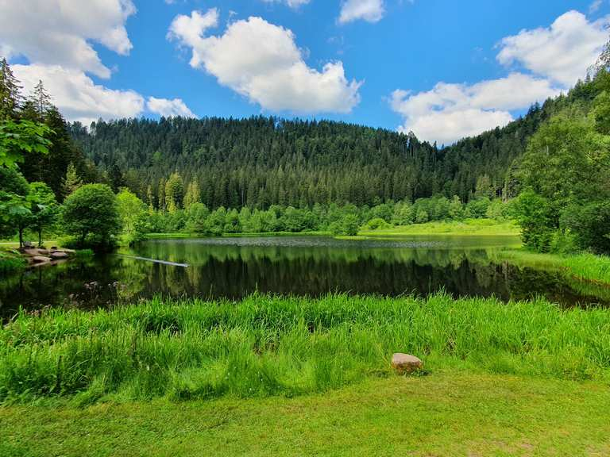
One of Baiersbronn's four certified Genießerpfade[1]. Sankenbachsee, the Glasmännlehütte at 777 m, and a manually-sluiced 40 m waterfall — you release the wooden gate yourself and watch the drop[3]. Demanding, 12.7 km, ~430 m climb, ~4 h from the Sesselbahn car park through Bannwald primordial forest.
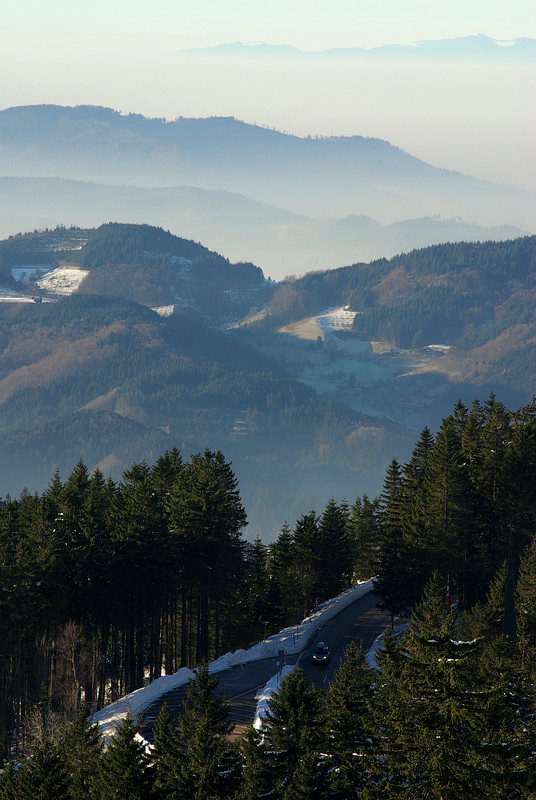
Largest of seven Black Forest cirque lakes — 3.7 ha, 18 m deep, 800 m loop at 1,036 m[12]. Named for the white water-lilies the Brothers Grimm and Eduard Mörike turned into a nymph legend. Mummelsee has rowboats, a lakeside Berghotel, and the easiest start for the Hornisgrinde ascent.
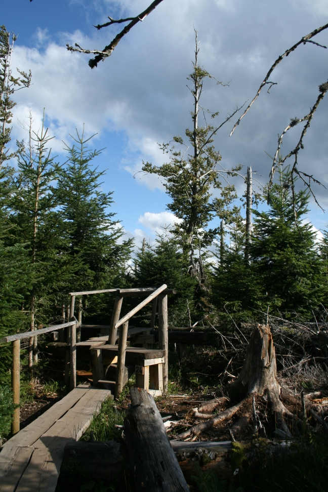
A 900 m boardwalk loop, opened 2003, threading the 10 ha that Cyclone Lothar flattened on 26 Dec 1999 with 200 km/h winds[14]. Left to recolonise on its own — birch saplings between dead spruce trunks. Sightlines to Strasbourg and the Vosges from the platform. Free; lay-by parking on the B500.
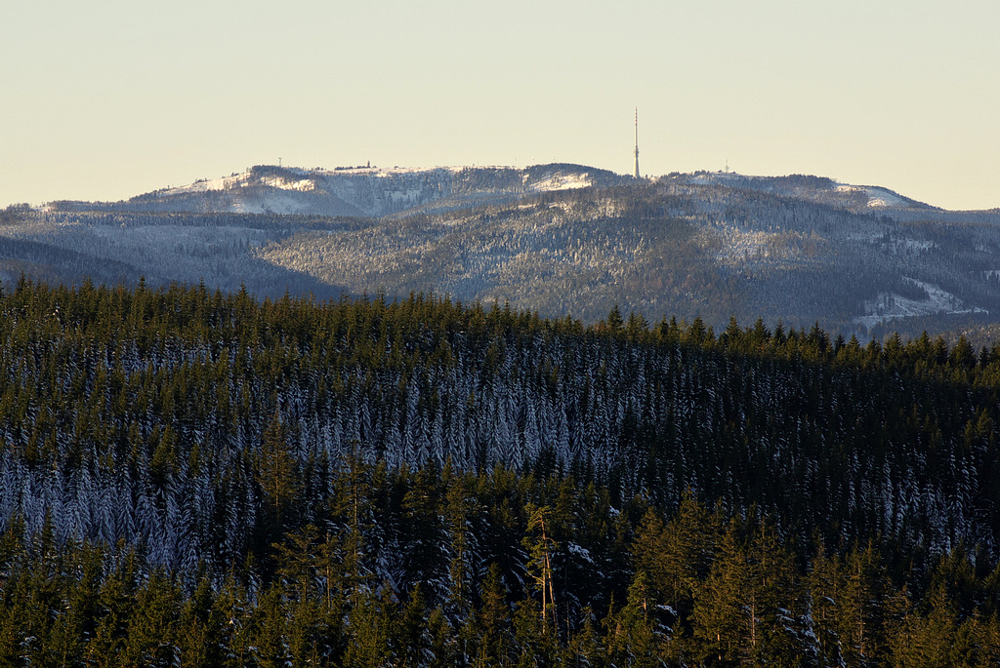
1,164 m — the roof of the Northern Black Forest, crowned by the 23 m Hornisgrinde Tower from 1910 and skirted by a raised bog up to 5 m thick and at least 6,000 years old[13]. Easiest ascent from the Mummelsee car park.
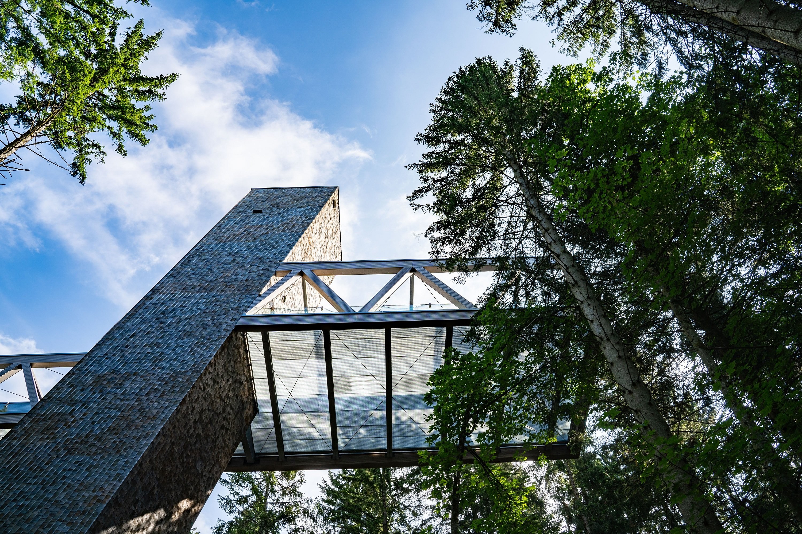
HQ of the Black Forest National Park — timber-clad pavilions, ~2.5 h interactive exhibit, cinema, and the 36 m cantilevered Bridge of Wilderness, opened 2021[17][18]. Free entry. Nationalparkzentrum Ruhestein is the only purpose-built indoor stop on this stretch of the high road.
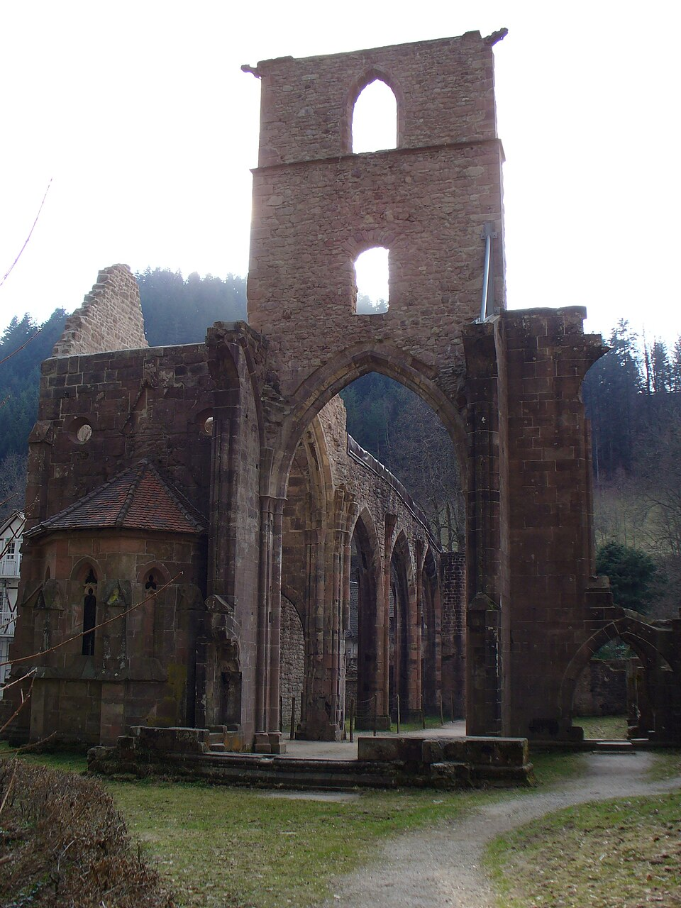
A Gothic Premonstratensian ruin at 620 m — founded by Duchess Uta of Schauenburg in 1196, dissolved 1802, set ablaze by lightning 1804[34]. Below it the Allerheiligen-Wasserfälle tumble nearly 90 m over seven cascades; gorge path opened 1840 with stairs and bridges[36]. Lunch at Restaurant Kloster Allerheiligen — Slow Food, Mangalitza pork[41].
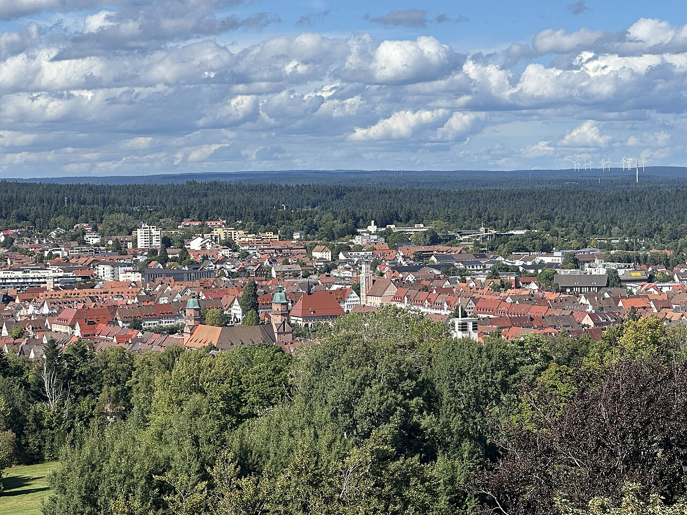
Planned 1599 by Duke Frederick I, designed by Heinrich Schickhardt for ~11,000 Protestant exiles[21]. The Marktplatz measures 219×216 m (4.74 ha) — Germany's largest market square, arcaded on all sides, 50 fountains in summer[22][23]. The L-shaped Stadtkirche seats men on one wing and women on the other, all facing the preacher at the vertex[24].
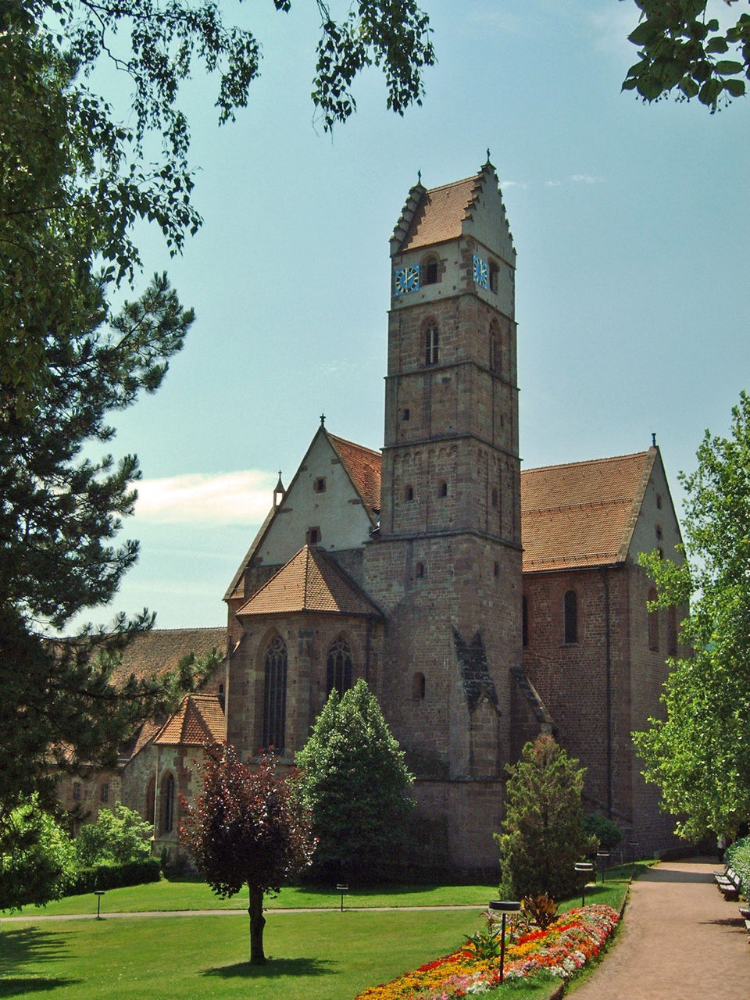
Kloster Alpirsbach — founded 1095, Romanesque church consecrated 1128 in the austere Hirsau Reform style[44]. The "Monks and Scholars" exhibit shows 15/16C clothing, homework and report cards pulled from hollow vault spaces in the east cloister[45]. Kreuzgangkonzerte in the Gothic courtyard since 1952 — 2026: 27 Jun, 11 Jul, 25 Jul, 1 Aug at 20:00[46].
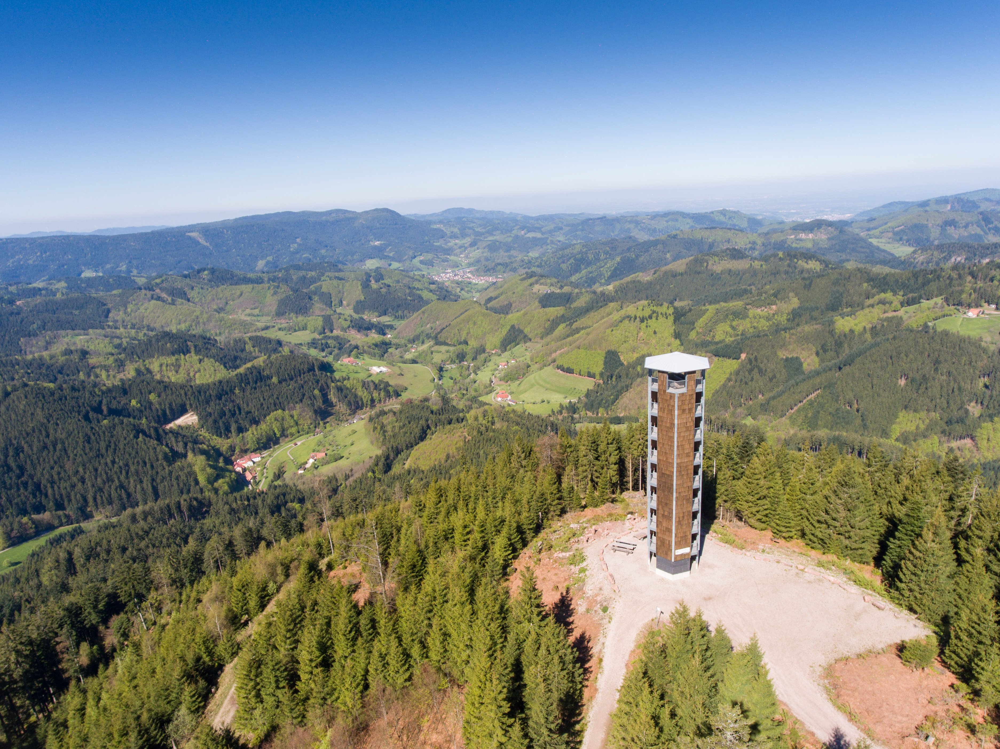
Alpirsbacher Klosterbräu runs 90-min public Brauwelt tours at 12:00 and 14:30, every day. One freshly tapped beer in the basic ticket; €28.40 combi bundles monastery + brewery + two tastings + a schnapps + bratwursts + pretzel + gift[47]. The Brauwelt complex extends to a wedding chapel in the old brewhouse, a beer cellar, distillery, beer-praline confectionery and an on-site glass-blower[48]. Spezial is the flagship Helles.
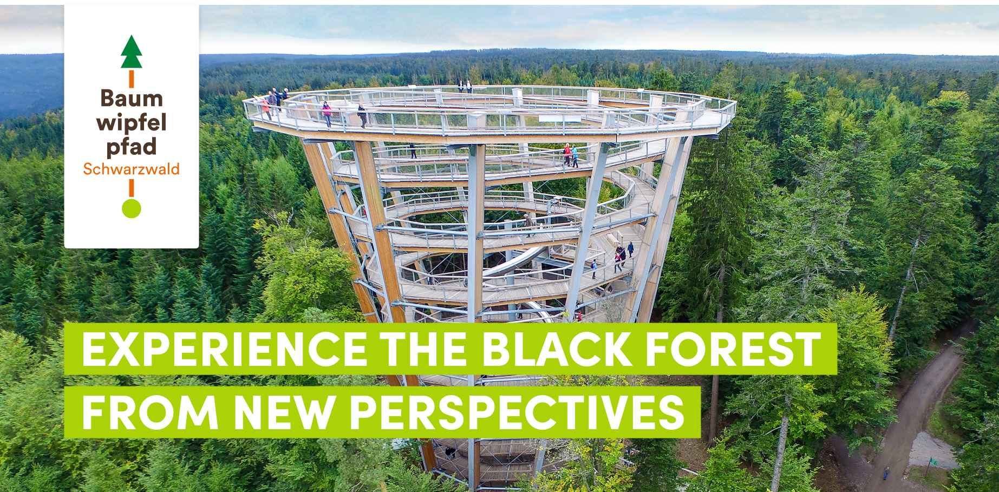
A 1,250 m barrier-free walkway up to 20 m above beech, fir and spruce, ending in a 40 m observation tower with a 55 m tunnel slide inside[54][55]. The Baumwipfelpfad Schwarzwald shares the Sommerberg plateau with the Wildline bridge and Palais Thermal — reach it via the 1908 funicular.
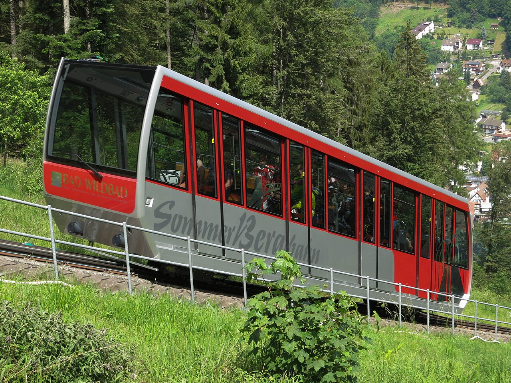
The Wildline suspension bridge opened July 2018 — 380 m long, hung in an arched form on two steel cables ~60 m above the Enz valley, the only one of its kind in Europe[56]. Daily 9:00–19:30 (last entry 19:00) at Heermannsweg 100[57]. Pair it with the treetop walk for one Sommerberg afternoon.
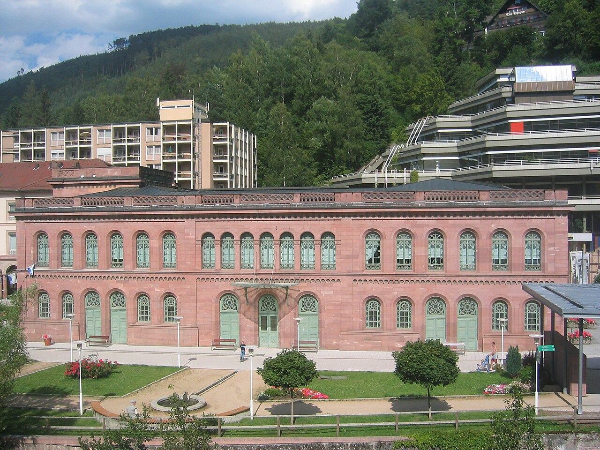
Built 1847 as the Graf-Eberhard-Bad by Nikolaus Friedrich von Thouret, on a bathing tradition documented since 1521; fully restored 1995[58]. Twelve thermal pools 32–38 °C across 2,000 m² over four levels — Moorish halls tiled with 1.4 million mosaics[60]. Upper floors and saunas are textile-free; Tuesdays are textile-day if that's not your thing[59].
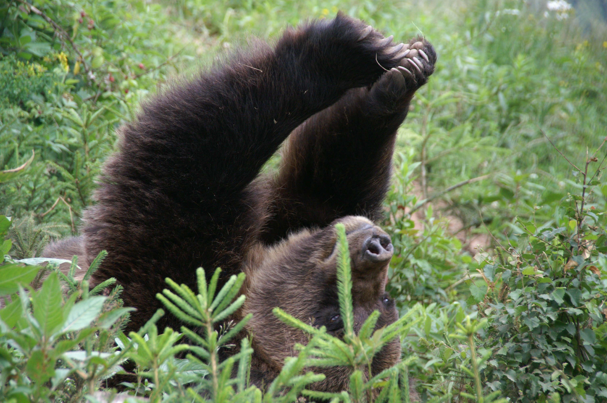
Alternativer Wolf- und Bärenpark Schwarzwald at Bad Rippoldsau-Schapbach — 10 rescued brown bears, 3 wolves and lynx across 10 ha of forest and meadow, with a natural playground and an explorer trail[71]. Daily 10:00–18:00 Mar–Oct; €14 adult / €12 reduced / €35 family[70].
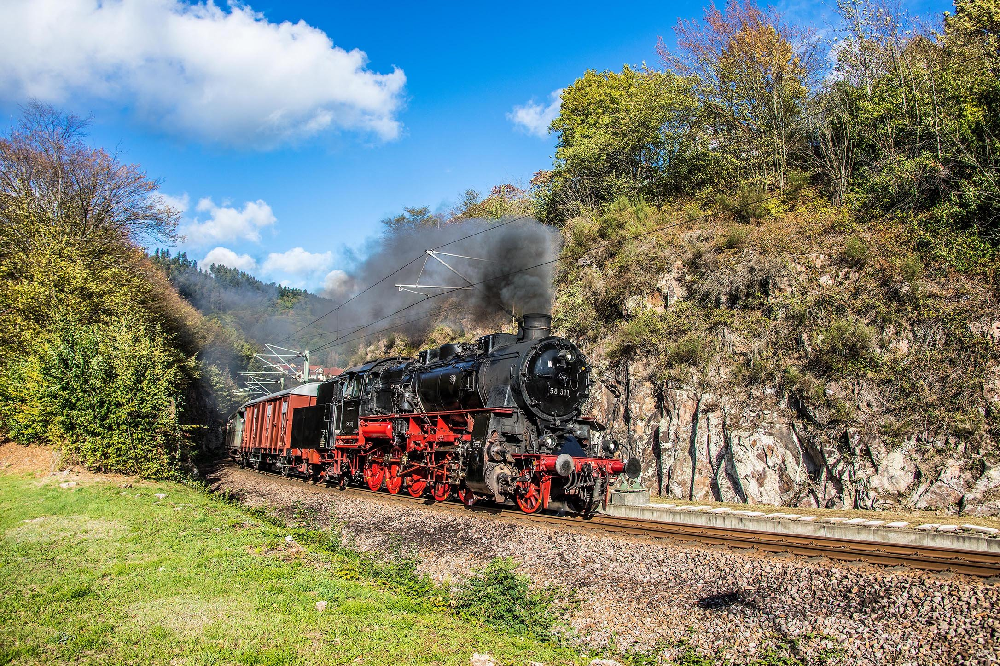
The 58.2 km Murgtalbahn began carrying passengers to Klosterreichenbach on 20 November 1901[30]. The Murgtal Dampfzugfahrten still run historic steam services from Karlsruhe through Rastatt, Gernsbach and Weisenbach to Baiersbronn, with catering and free bike transport. 2026 bookings opened 31 Mar[31].
A 28 m timber observation tower at ~900 m, opened April 2015 — the modern complement to the 1890 Moosturm on the nearby Mooskopf[42]. The natural pairing if you're already at Allerheiligen and want a second viewpoint on the way home. Buchkopfturm.